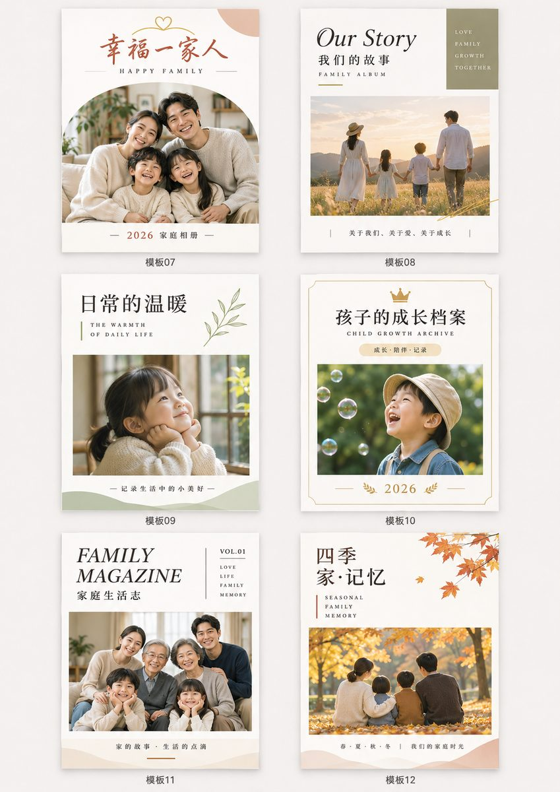
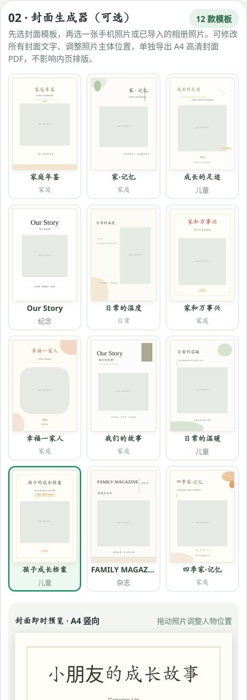

批量挑选照片
按时间浏览、按月选择、滑动多选，支持从系统选图和文件夹继续追加。
以打印装订为目标设计，尽量减少反复传照片、手动排版和记录拍摄日期的工作。
按时间浏览、按月选择、滑动多选，支持从系统选图和文件夹继续追加。
普通 2/4/8/12/16 张布局与杂志款组合，可调整装订边距、图片顺序及裁切位置。
可调整拍摄日期文字的大小、颜色与位置，并在排版预览中检查效果。
12 款简约封面模板，替换照片、修改标题与文案，生成单页 A4 封面 PDF。
可选择清晰度，满足相册电子存档和打印准备的需要。实际打印质量取决于照片与设备。
当前测试版本的照片处理与 PDF 生成在设备本地进行；无需向本站上传私人照片。

选一款封面，选择相册照片或从手机另选照片，编辑标题、副标题、年份和一句话文案。
封面以独立的高清 A4 PDF 输出，便于使用不同纸张印制。展示图片为设计示例，实际功能以安装版本为准。
按拍摄时间选择照片或追加导入。
替换照片、调整人物构图、修改文字。
将封面与相册内页分别导出，按需打印。
